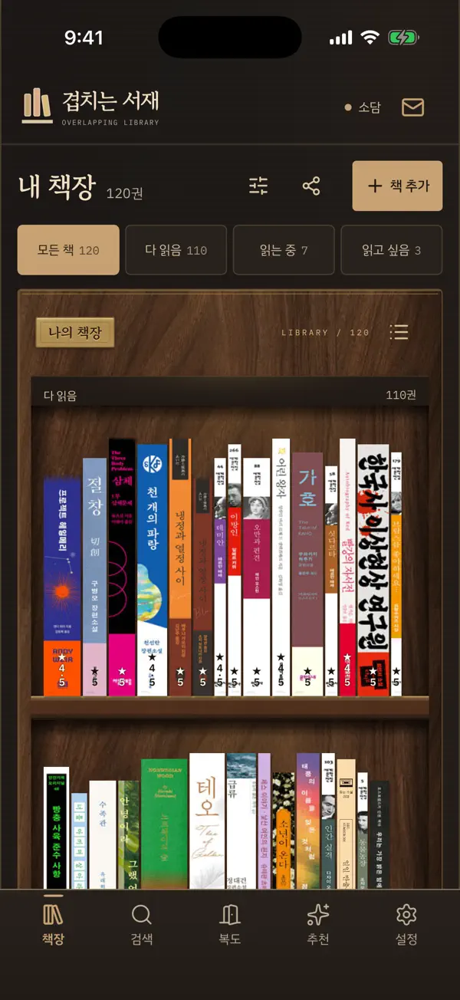
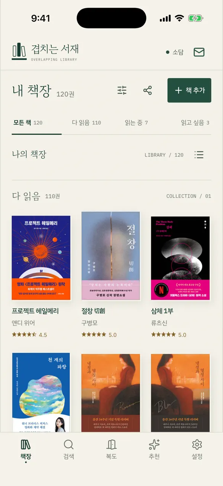
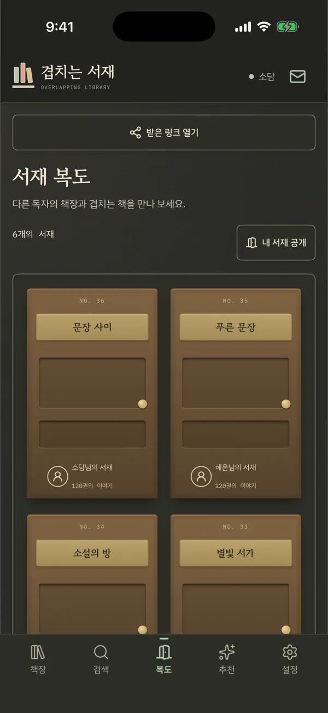
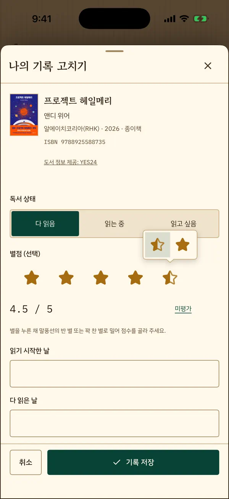

iPhone · iPad
App Store 출시
무료 다운로드 · iOS / iPadOS 16.0 이상
App Store에서 다운로드읽은 책을 기록하고, 내 책장을 나눠요.
책과 감상, 마음에 남은 문장을 한곳에 모으고 다른 독자와 겹치는 책을 찾아보세요.
App Store 출시
무료 다운로드 · iOS / iPadOS 16.0 이상
App Store에서 다운로드브라우저에서 이용 가능
겹치는 서재 웹 앱으로 이동합니다.
웹 서재 열기다 읽은 책, 읽는 중인 책, 앞으로 읽고 싶은 책을 한곳에서 정리할 수 있는 독서 기록 앱입니다. 내 책장을 꾸미고, 별점과 감상을 남기고, 다른 독자의 공개 서재에서 나와 겹치는 책을 확인해 보세요.
App Store에 등록된 앱 화면입니다. 좁은 화면에서는 옆으로 넘겨 보세요.




App Store 출시
로그인하지 않고도 기기에 독서 기록을 남길 수 있어요.
App Store에서 다운로드이용 가능
별도의 겹치는 서재 웹 앱이 브라우저에서 열립니다.
웹 서재 열기